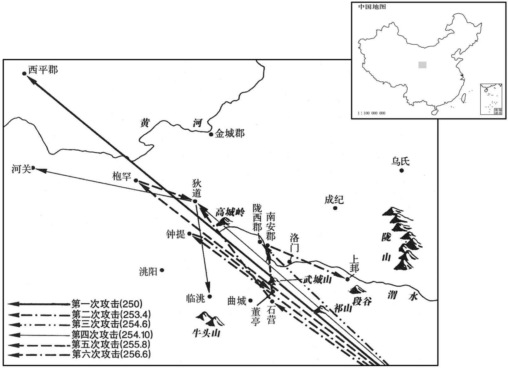
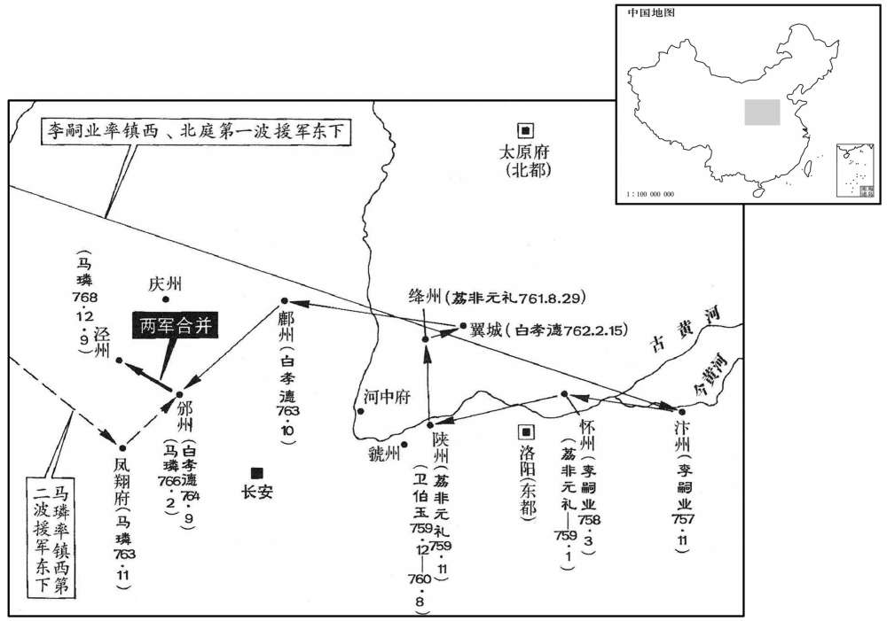
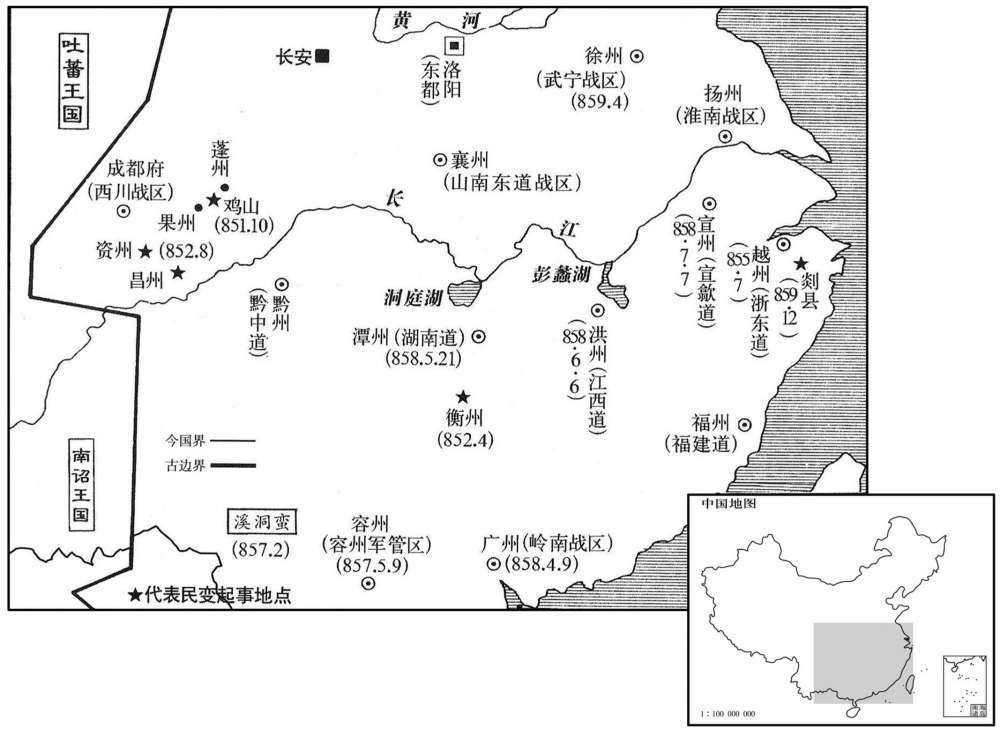
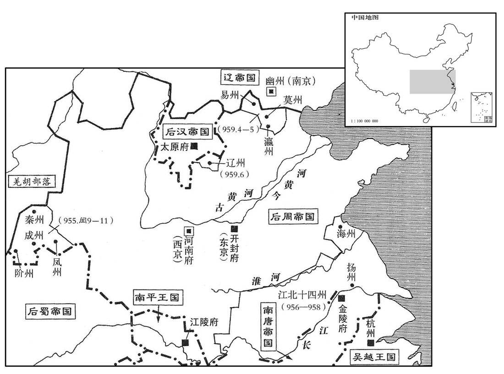

公元50年资治通鉴：本年记事、原文与白话对照
按原书编年位置阅读；追叙和史论不等于本年发生的事件。白话采用所据译本，缺译不以生成译文补齐。
卷44 · 本年记事
公元50年 · 汉世祖光武皇帝建武二十六年
二十六年〔（庚戌、五〇）〕
上传原文的注释括号有异常，字符原样保留；无法可靠划分的段落默认全文显示。

本年形势与背景参考图

本年形势与背景参考图

本年形势与背景参考图

本年形势与背景参考图
正月，诏增百官奉，〔正月，诏增百官奉，〔百官志：大将军、三公奉，月三百五十斛；秩中二千石奉，月百八十斛；二千石，月百二十斛；此二千石，月百斛；千石，月九十斛；比千石，月八十斛；六百石，月七十斛；比六百石，月五十五斛；四百石，月五十斛；比四百石，月四十五斛；三百石，月四十斛；比三百石，月三十七斛；二百石，月三十斛；比二百石，月二十七斛；百石，月十六斛；斗食，月十一斛；佐史，月八斛。凡诸受奉，钱、谷各半。奉，音扶用翻。〕其千石已上，减于西京旧制，六百石已下，增于旧秩。
正月，光武帝下诏，增加百官的俸禄。千石以上的官吏，低于西汉旧制；六百石以下的官吏，高于西汉旧制。
初作寿陵。〔贤曰：初作陵，未有名，故号寿陵，盖取久长之义也。〕帝曰：「古者帝王之葬，皆陶人、瓦器、木车、茅马，使后世之人不知其处。太宗识终始之义，景帝能述遵孝道，遭天下反复，而霸陵独完受其福，岂不美哉！〔谓赤眉入长安，惟霸陵不掘。〕今所制地不过二三顷，无〔【章：十二行本「无」下有「为」字；乙十一行本同；张校同。】〕山陵陂池，裁令流水而已。〔贤曰：言不起山陵，裁令封土陂池不停水而已。陂，音普何翻。池，音徒河翻。〕使迭兴之后，与丘陇同体。」〔迭兴，谓易姓而王者。〕
开始兴建皇陵。光武帝说：“古代帝王的随葬之物，全都是陶人、瓦器、木制之车、茅编之马，使后世的人不知道陵墓所在。文帝明了生死的真义，景帝能够遵从孝道，所以经历了天下大乱的变故之后，霸陵唯独有幸保全，这岂不是美事吗！现在设计的陵墓，占地不过二三顷，不起山陵，不修池，只令不积水而已。使陵墓在改朝换代之后，能与丘陇泥土成为一体。”
诏遣中郎将段彬、〔【章：十二行本「彬」作「郴」；乙十一行本同。彬，丑林翻。】〕副校尉王郁使南匈奴，立其庭，去五原西部塞八十里。〔地理志，五原西部都尉治田辟。师古曰：辟，读曰壁。〕使者令单于伏拜受诏，单于顾望有顷，乃伏称臣。拜讫，令译晓使者曰：「单于新立，诚凓于左右，愿使者众中无相屈折也。」诏听南单于入居云中，〔贤曰：云中，郡名，在今胜州北。宋白曰：汉云中故城，在胜州东北四十里榆林县界，赵武侯所筑。〕始置使匈奴中郎将，将兵卫护之。
光武帝下诏，派中郎将段彬、副校尉王郁出使南匈奴，为南匈奴建立王庭，距五原西部塞八十里。汉朝使者命令单于伏地跪拜，接受诏书。单于犹豫片刻，于是伏地，自称臣属。跪拜完毕后，他命翻译告诉汉朝使者说：“单于新近即位，在左右群臣面前跪拜实在羞惭，希望使者不要在大庭广众中使单于屈节。”光武帝下诏，听任南单于进入云中郡居住。汉朝自此设置使匈奴中郎将，领军护卫。
夏，南单于所获北虏薁鞬左贤王将其众及南部五骨都侯〔韩氏骨都侯、当于骨都侯、呼衍骨都侯、郎氏骨都侯、粟藉骨都侯，凡五。薁，音郁。鞬，居言翻。〕合三万余人畔归，去北庭三百余里，自立为单于。月余，日更相攻击，〔更，工衡翻。〕五骨都侯皆死，左贤王自杀，诸骨都侯子各拥兵自守。
夏季，南单于所俘虏的北匈奴左贤王带领旧部及南匈奴的五位骨都侯，共计三万多人，叛变北逃，在距北匈奴王庭三百余里处，自立为单于。一个多月以后，发生了内讧，每天互相攻击，五位骨都侯全部死去，左贤王自杀，五位骨都侯的儿子们各自拥兵独立。
秋，南单于遣子入侍。诏赐单于冠带、玺绶、〔南匈奴传：黄金玺，盭緺绶。贤曰：盭，音戾，草名；以戾草染绶，因以为名，别汉诸侯王制。戾，绿色。緺，紫青色，音瓜。玺，斯氏翻。绶，音受。〕车马、金帛、甲兵、什器。〔贤曰：古之师行，二五为什，食器之类必供之，故曰什物、什具。今人通谓生生之具为什物。〕又转河东米糒二万五千斛，牛羊三万六千头以赡给之。〔糒，音备，糗也。〕令中郎将将弛刑五十人，随单于所处，参辞讼，察动静。〔弛刑者，弛刑徒也。说文：弓解曰弛。此谓解其罪而输作者。处，昌吕翻。考异曰：帝纪：今年春，使段彬赐玺绶，置使匈奴中郎将。据匈奴传，赐玺绶在秋，其置中郎将亦未知决在何时。或者今天春置之，至是更为之约束制度耳。〕单于岁尽辄遣奉奏，送侍子入朝，汉遣谒者送前侍子还单于庭，赐单于及阏氏、左、右贤王以下缯彩合万匹，岁以为常。〔阏，音烟。氏，音支。〕于是云中、五原、朔方、北地，定襄、鴈门、上谷、代八郡民归于本土。〔前此避匈奴内徙者，令皆归复本土。〕遣谒者分将弛刑，补治城郭，〔将，即亮翻；下同。治，直之翻。〕发遣边民在中国者布还诸县，皆赐以装钱，转给粮食。时城郭丘墟，扫地更为，上乃悔前徙之。〔徙民见上卷十五年。〕
秋季，南单于派遣儿子到汉朝做人质。光武帝下诏，赐给南单于官帽、腰带、印玺、车马、金帛、武器及日用什物。又从河东郡调粮二万五千斛、牛羊三万六千头供给南匈奴。命令中郎将率领免刑囚徒五十人，跟随南单于，参与处理诉讼案件，并伺察动静。到了年底，南单于便派使者呈送奏书，护送做新人质的王子到汉朝。汉朝则派谒者将上一次充当人质的王子送回单于王庭，赐给单于和王后、左右贤王及以下官员彩色丝绸一万匹，每年如此，成为常例。于是，云中、五原、朔方、北地、定襄、雁门、上谷、代等八郡的流亡居民回到本土。汉朝派出谒者，分别带领免刑囚徒修补整治城墙。并遣送内迁中原的边疆居民回到各县，对返归的人全都赐给治装费，调粮供应。此时沿边城郭已成废墟，需要清除瓦砾，重新建设，于是光武帝对先前的徙民之举感到后悔。
冬，南匈奴五骨都侯子复将其众三千人归南部，北单于使骑追击，悉获其众。南单于遣兵拒之，逆战不利，于是复诏单于徙居西河美稷，〔复，扶又翻。〕因使段彬、王郁留西河拥护之，〔使匈奴中郎将自是亦屯西河美稷。杜佑曰：汾州隰城县有美稷乡，即汉美稷县也。隰城，汉之兹氏县也。〕令西河长史岁将骑二千、弛刑五百人助中郎将卫护单于，冬屯夏罢，自后以为常。南单于既居西河，亦列置诸部王，助汉扞戌北地、朔方、五原、云中、定襄、鴈门、代郡，皆领部众，为郡县侦逻耳目。〔侦，丑郑翻。贤曰：逻，音力贺翻。〕北单于惶恐，颇还所掠汉民以示善意，钞兵每到南部下，〔钞，楚交翻。〕还过亭候，辄谢曰：「自击亡虏薁鞬日逐耳，〔薁，于六翻。鞬，居言翻。〕非敢犯汉民也。」
冬季，南匈奴五位骨都侯之子率领部众三千人回归南匈奴，北匈奴单于派骑兵追击，将他们全部俘获。南匈奴单于发兵抵抗北匈奴，迎战失利。于是光武帝再次下诏，让南单于移居西河郡美稷县，命段彬、王郁留驻西河护卫。又命西河长史每年冬天带领二千骑兵、五百免刑囚徒协助中郎将护卫南单于，冬天屯驻，到夏天时撤走，从此成为常例。南单于移民西河郡以后，依旧设立诸部落王，协助汉朝戍守北地、朔方、五原、云中、定襄、雁门、代郡。诸部落王全都率领部众为郡县巡逻侦察。北单于十分惊恐，送回了不少被掠走的汉朝居民，以表示善意。每当其突击部队南下南匈奴，经过汉朝的边塞亭燧，便致歉道：“我们只是讨伐叛徒日逐王而已，不敢侵犯汉朝居民。”